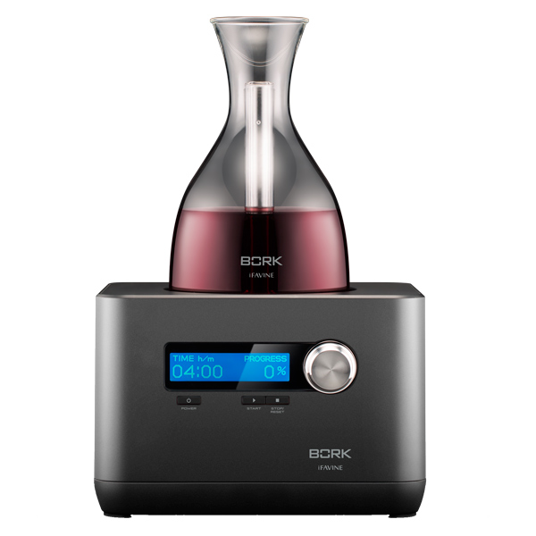
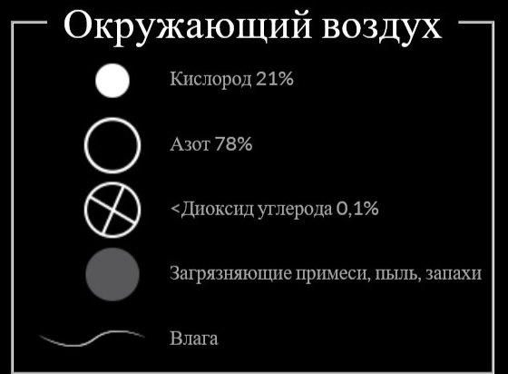
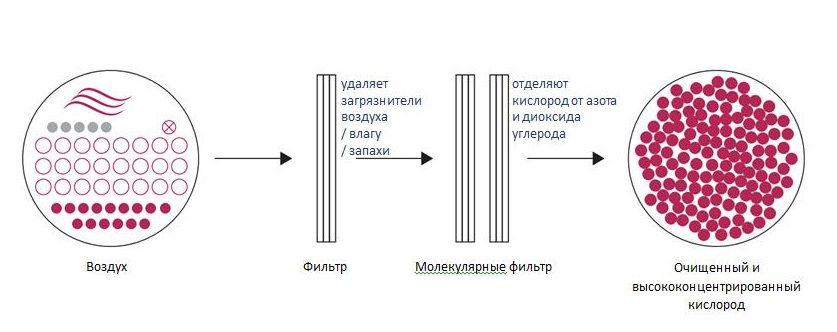
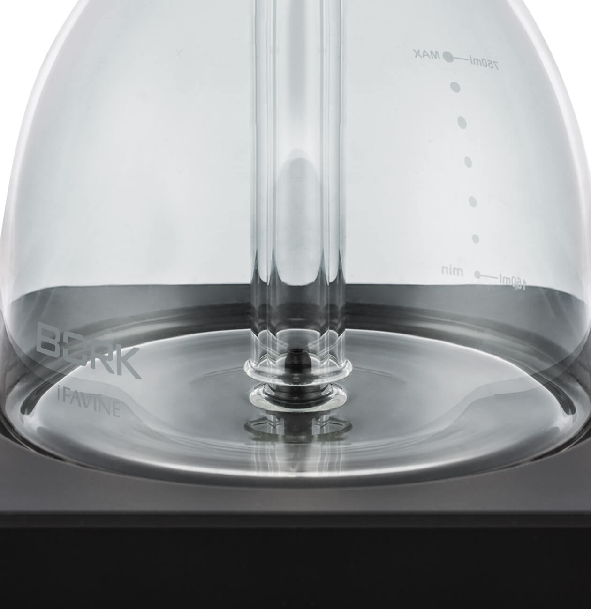
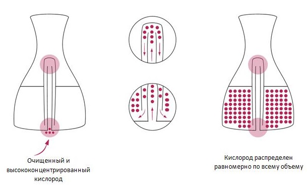
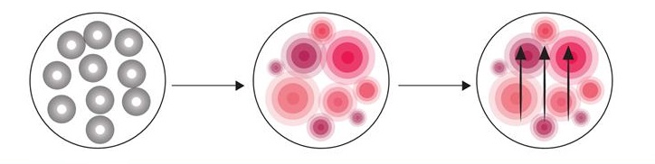
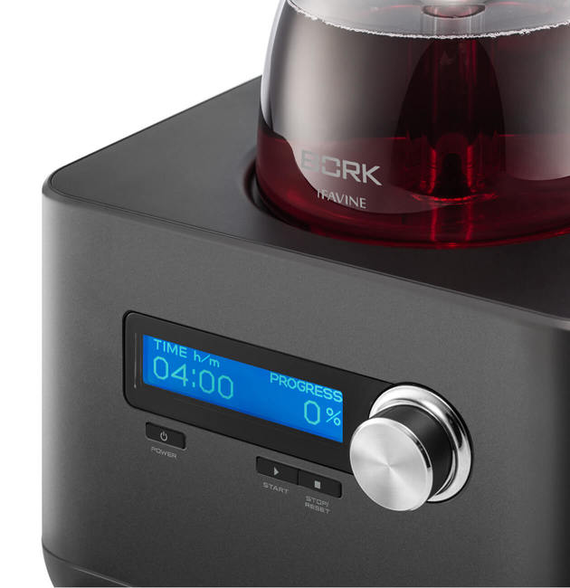
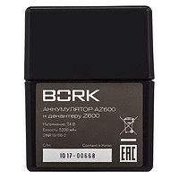
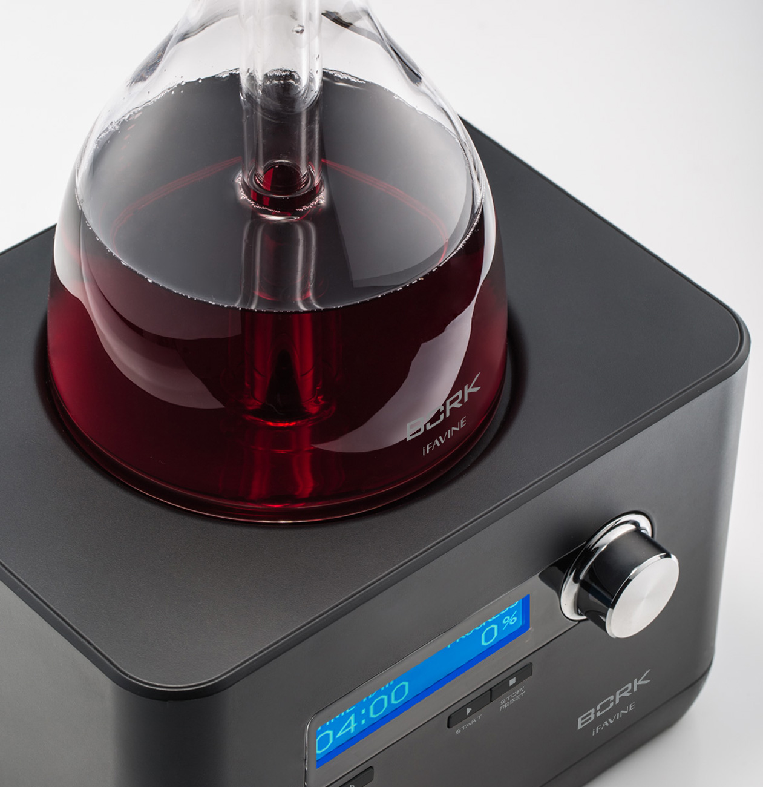
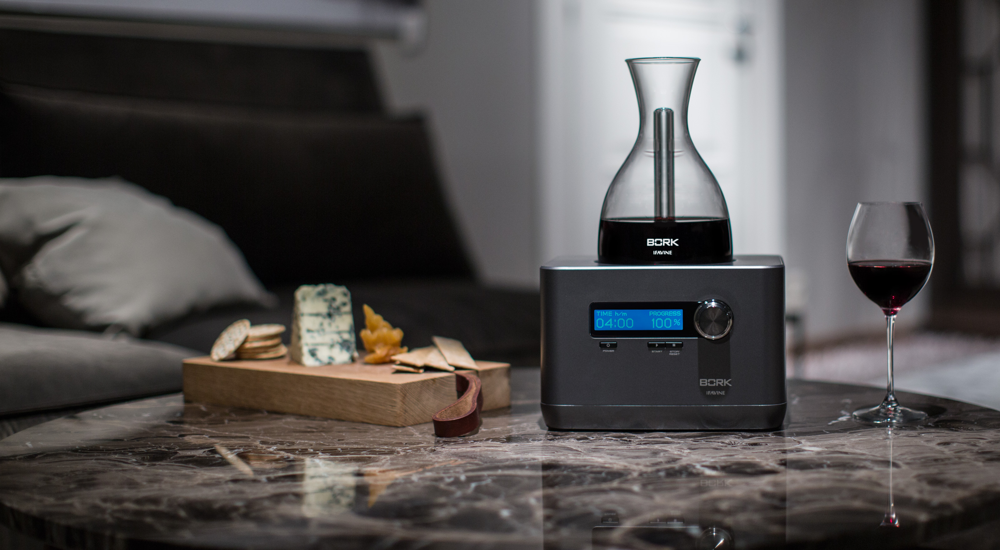

Интеллектуальный декантер BORK Z600 iFavine
BORK Z600 – решение, позволяющее снять все ограничения, имеющиеся при
обычном декантировании.
Это первый интеллектуальный декантер, использующий революционную технологию, которая позволяет переосмыслить опыт декантирования, чтобы улучшить вкус и аромат вина всего за несколько минут.
Кроме того, декантер BORK Z600 размягчает танины и переводит вино в стадию зрелости, на, что обычно требуются годы выдерживания в подвалах.
Уникальная технология: очищенный и высококонцентрированный кислород
Декантер BORK Z600 фильтрует окружающий воздух, удаляя любые примеси (влагу, пыль, запахи) и изолирует кислород от азота и диоксида углерода. Он аэрирует вино постоянным потоком очищенного и высококонцентрированного кислорода благодаря своей передовой системе извлечения кислорода, которая не использует никаких химикатов.
Постоянный поток очищенного и концентрированного кислорода
Декантирование вина очищенным кислородом значительно повышает эффективность данного процесса с точки зрения времени и качества:
- Деканер BORK Z600 удаляет большинство загрязнителей воздуха и влагу.
- Постоянный поток кислорода смягчает проблемы при декантировании вина в местах с перепадами давления воздуха.
- Эта передовая система гарантирует, что любое вино будет подаваться с неизменным качеством, в какой бы точке мира его не декантировали.
Патентованный стеклянный декантер
Очищенный и высококонцентрированный кислород проходит вверх по специальной трубке внутри патентованного декантера. Затем он меняет направление и проходит вниз, проникая в каждую молекулу вина.
Мягкие танины и обогащенный аромат
Специально разработанный стеклянный декантер равномерно распределяет кислород по всему объему вина, а не только по поверхности:
- Он осуществляет насыщение кислородом
- Благодаря смягчению танинов, обеспечивает приятные вкусовые ощущения
- Он облагораживает все ароматы, раскрывая полный потенциал вина
Удобное управление
Декантирование с BORK Z600 становится настолько простым, что требует от вас лишь выбора времени насыщения любимого напитка и нажатия одной кнопки. Время декантирования зависит от вида вина или напитка, вы можете выбрать нужное Вам время интервалом, от 0.5 сек до 15 минут.
Возможность автономной работы
Аккумулятор AZ600
Мобильность и удобство установки.
Портативный аккумулятор позволяет устанавливать декантер в любом удобном для вас месте. Заряда устройства достаточно для 300 циклов работы BORK Z600, а для его пополнения достаточно 2,5 часов.
(Продается отдельно).
Технические Характеристики

Мощность: 55 Вт
Объем графина: 750 мл
Время декантирования: 0,5 сек–15 мин
Вес: 3,51 кг
Срок гарантии: 1 год
Мин.объем напитка: 150 мл
Макс.объем напитка: 750 мл
Скорость потока кислорода: 0,1-0,2 л/мин
Тип управления: Механический
Ручное управление: Есть
Сетевой шнур: Есть
Работа от аккумулятора: Есть
Аккумулятор: Есть в продаже
Справочник: Есть
Дисплей: Цифровой
Материал корпуса: Пластик
Страна производства: Китай
Сейлз - аргументы
- Электронное управление
- Автоматическая работа
- Уникальный дизайн
- Возможность декантирования разных алкогольных напитков
- Раскрытие вкуса напитка
- Инновационная система аэрации
- Ускорение процесса в 60 раз
- Возможность работы от аккумулятора